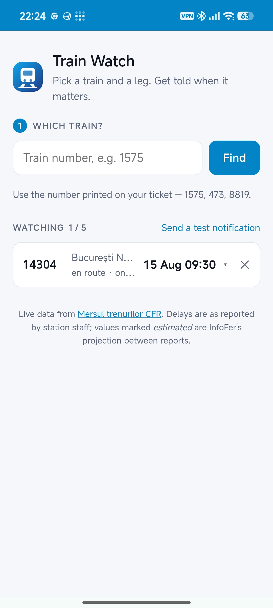
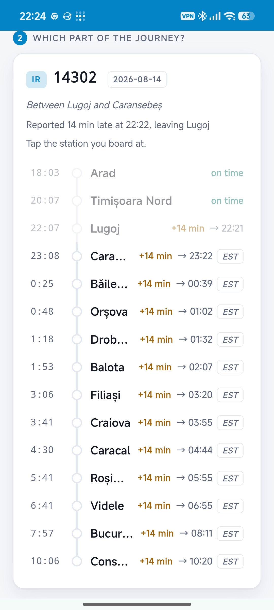
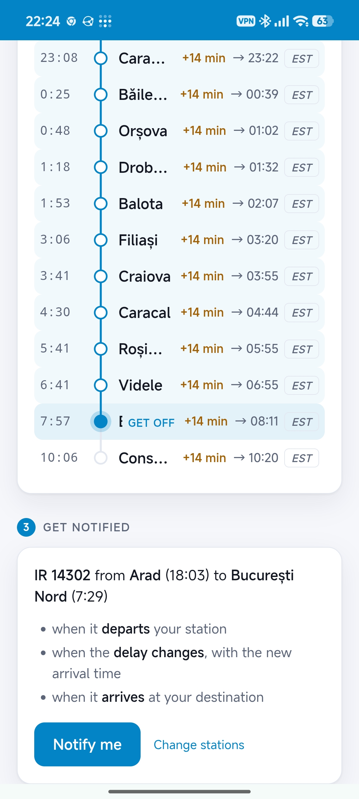
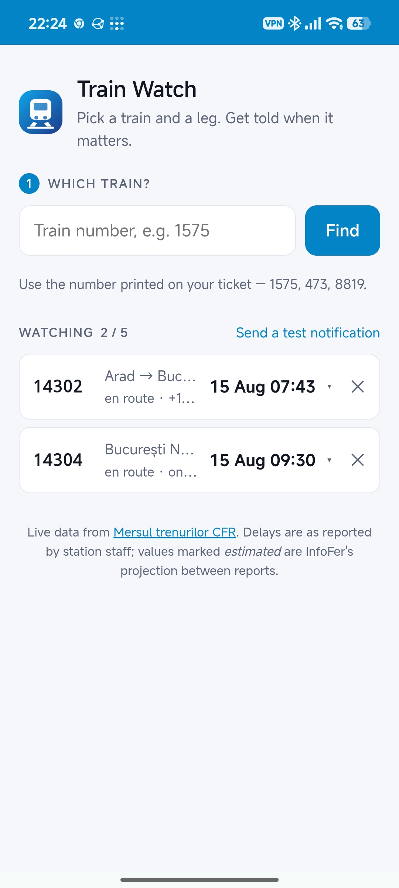

PWA
Intârzieri Tren

Try It Out
Access is invite-only. Open the web app on your mobile browser to install it.
About The App
Track your train journeys across Romania effortlessly. Intârzieri Tren is a Progressive Web App (PWA) designed to give you real-time updates and peace of mind while traveling.
Simply select your train and your route, and the app will keep you informed every step of the way without needing to constantly check a screen.
Features
- 🔔 Smart Push Notifications: Get instantly notified when your train departs, when it arrives, and if its delay changes by more than 5 minutes. No more spammy alerts for minor shifts!
- 🗺️ Live Train Map: View a live map of all running trains across the country, complete with their current positions and reported delays.
- 🛤️ Full Itineraries: See your train's complete route, including all scheduled stops, expected departure and arrival times, and per-station delay estimates.
- 📱 Seamless App Experience: Installs directly to your home screen (iOS and Android) for a native app feel. Quick, lightweight, and always accessible.
- ⏱️ Multi-Trip Tracking: Keep an eye on up to 5 active trips simultaneously. Your recent trips remain accessible in your history for up to 12 hours after arrival.
- 🔒 Secure & Private: Access is strictly invite-only. Your device is securely linked without needing any usernames, passwords, or personal information.
Gallery


